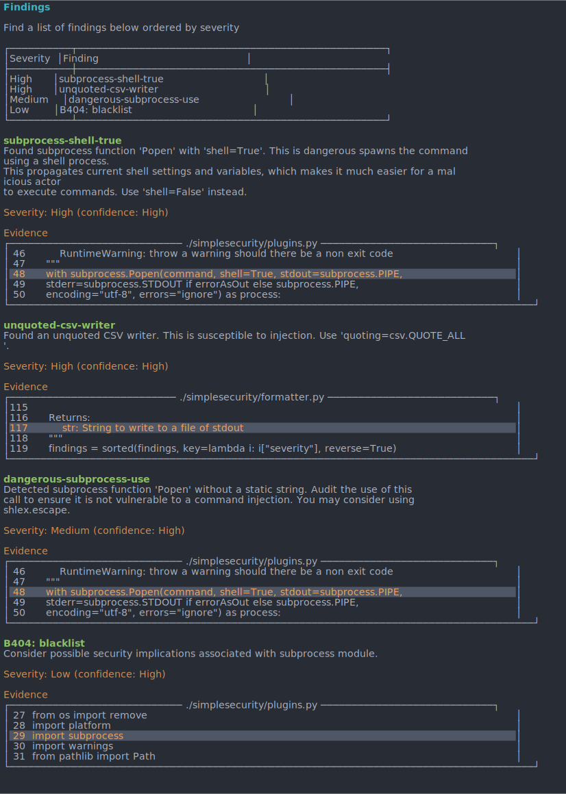

Getting Started
Install With PIP
A requirement for using SimpleSecurity is having a version of python 3.x installed.
pip install simplesecurity
Head to https://pypi.org/project/SimpleSecurity/ for more info This program has been written for Python versions 3.7 - 3.10 and has been tested with both 3.7 and 3.10
Run CLI
In order to run the CLI utility, you can run simplesecurity in this directory
{kind=link}
Options in the CLI tool include:
usage: __main__.py [-h] [--format FORMAT] [--plugin PLUGIN] [--file FILE]
[--level LEVEL] [--confidence CONFIDENCE]
[--no-colour] [--high-contrast] [--fast] [--zero]
Combine multiple popular python security tools...
and generate reports or output into different formats.
optional arguments:
-h, --help show this help message and exit
--format FORMAT, -f FORMAT
Output format. One of ansi, json, markdown, csv. default=ansi
--plugin PLUGIN, -p PLUGIN
Plugin to use. One of bandit, safety, dodgy, dlint, semgrep, all, default=all
--file FILE, -o FILE Filename to write to (omit for stdout)
--level LEVEL, -l LEVEL
Minimum level/ severity to show
--confidence CONFIDENCE, -c CONFIDENCE
Minimum confidence to show
--no-colour, -z No ANSI colours
--high-contrast, -Z High contrast colours
--fast, --skip Skip long running jobs. Will omit plugins with long run time (applies to -p all only)
--zero, -0 Return non zero exit code if any security vulnerabilities are found
You can also import this into your own project and use any of the functions in the DOCS
Configuring Semgrep
The configuration of SemGrep is organized with a yaml file. A default config is already enclosed in this library. I you want to specify the config, you can follow the steps below:
cd to semgrep-rules/python
do
cat **/security/**/*.yaml >> semgrep_sec.yaml
cat **/security/*.yaml >> semgrep_sec.yaml
Find and replace rules: with `` apart from the first instance
Reformat with ctrl+shift+i
replace simplesecurity/semgrep_sec.yaml with the new one